Next: 3.3.3 Target set
Up: 3.3 Optimal control problem
Previous: 3.3.1 Control system
Contents
Index
3.3.2 Cost functional
We will consider cost functionals of the form
 |
(3.20) |
which is an exact copy of (1.2).
Here
 and
and
 are the final (or terminal) time and state,
are the final (or terminal) time and state,
 is the running cost (or Lagrangian),
and
is the running cost (or Lagrangian),
and
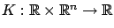
is the terminal cost. We will explain how the final time
is defined
in Section 3.3.3 below. Since the cost depends on the initial
data and the final time as well as on the control, it would be more accurate to write
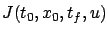
, but we write  for simplicity and to reflect
the fact that the cost is being minimized over the space of
control functions. Note that even if
for simplicity and to reflect
the fact that the cost is being minimized over the space of
control functions. Note that even if  does not depend on
does not depend on  , the cost
, the cost  depends on the control
depends on the control  through
through  which is the trajectory that this control generates. The reader might have remarked that our present choice
of arguments for
deviates from the one we made in
calculus of variations; it seems that
which is the trajectory that this control generates. The reader might have remarked that our present choice
of arguments for
deviates from the one we made in
calculus of variations; it seems that
 would have been more consistent.
However, we can always pass from
would have been more consistent.
However, we can always pass from
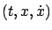
to
 by substituting
by substituting 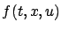
for  , while it may not
be possible to go in the opposite direction. Thus it is more general, as well
as more natural, to let
depend explicitly on
. In contrast
with Section 3.3.1, where the regularity conditions
on
, while it may not
be possible to go in the opposite direction. Thus it is more general, as well
as more natural, to let
depend explicitly on
. In contrast
with Section 3.3.1, where the regularity conditions
on  and
were dictated by the goal of having a well-posed control
system, there are no such a priori requirements on the functions
and
and
were dictated by the goal of having a well-posed control
system, there are no such a priori requirements on the functions
and  . All
derivatives that will appear in our subsequent derivations
will be assumed to exist, and depending
on the analysis method we will eventually see what
differentiability assumptions on
and
are needed.
. All
derivatives that will appear in our subsequent derivations
will be assumed to exist, and depending
on the analysis method we will eventually see what
differentiability assumptions on
and
are needed.
Optimal control problems in which the cost is given by (3.21)
are known as problems in the Bolza form, or collectively
as the Bolza problem.
There are two important special cases of the Bolza problem. The
first one is the Lagrange problem, in which there is no
terminal cost:  . This problem--and its name--of course
come from calculus of variations. The second special case is the
Mayer problem, in which there is no running cost:
. This problem--and its name--of course
come from calculus of variations. The second special case is the
Mayer problem, in which there is no running cost:
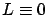
. We can pass back and forth between these different forms by
means of simple transformations. Indeed, given a problem with a
terminal cost
, we can write
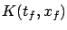 |
 |
|
| |
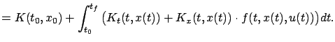 |
|
Since
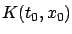
is a constant independent of
,
we arrive at an equivalent problem in
the Lagrange form with
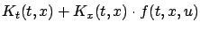
added to the
original running cost.
On the other hand, given a problem with a running cost
satisfying the same
regularity conditions as
,
we can introduce an extra state variable
 via
via
(we use a superscript instead of a subscript to avoid
confusion with the initial state).
This yields
thus converting the problem to the Mayer form. (The value of 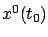
can
actually be arbitrary, since it only changes the cost by an additive constant.)
Note that the similar trick of introducing the additional state variable
 , which we already mentioned in Section 3.3.1,
eliminates the dependence of
and/or
on time;
for the Bolza problem
this gives
, which we already mentioned in Section 3.3.1,
eliminates the dependence of
and/or
on time;
for the Bolza problem
this gives
 with
with
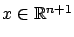
.
Next: 3.3.3 Target set
Up: 3.3 Optimal control problem
Previous: 3.3.1 Control system
Contents
Index
Daniel
2010-12-20